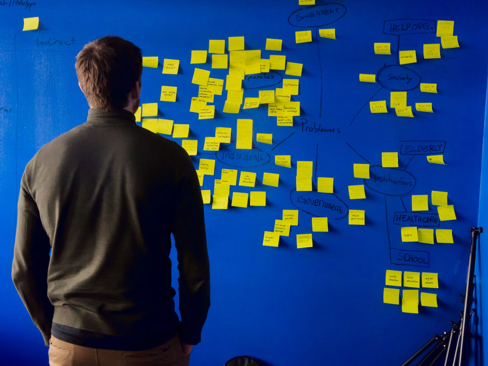
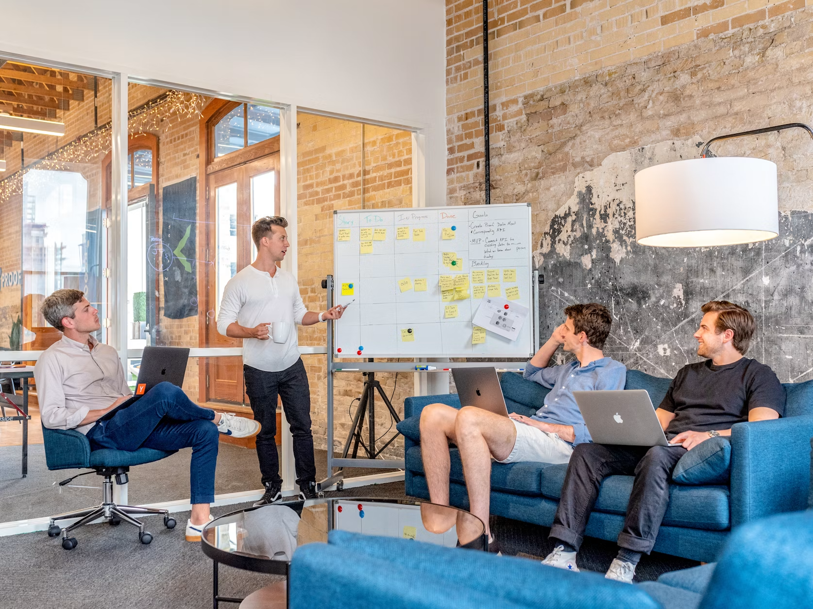

Startup Profiles & Mapping
Curated startup profiles across sectors, stages, regions, founders, funding status, and support needs.
"Cambodia's startup ecosystem has grown quickly, but most of what happens inside it is still tracked informally — through personal networks and word of mouth."
Demo prototype operated by Toptimize Co., Ltd. for desirability testing.
Mobile payments for underserved merchants across Phnom Penh.
CSR is a neutral platform that helps Cambodian startups get discovered and helps partners understand the country's innovation landscape. It is not an association, government body, or investment fund — it exists to make the ecosystem visible to the people building it, investing in it, and supporting it.
But CSR doesn't end at the directory. Founders get storytelling that reaches sponsors and international partners, and the ecosystem gets reports, mapping, and insight that most of it currently only tracks informally.



Curated startup profiles across sectors, stages, regions, founders, funding status, and support needs.
Annual and thematic reports highlighting trends, gaps, investment signals, and partnership opportunities.
Positive, credible storytelling that helps Cambodian founders reach sponsors, investors, and international partners.
A categorized map of Cambodia's startup ecosystem actors, for the MVP. The next version can become a searchable, self-updating ecosystem database.
Hover a slice for a quick look. Click a slice to see the full list of organizations.
CSR's editorial team curates startup profiles and ecosystem insights independently of sponsors and partners.
Editorial Lead
Oversees profile accuracy and editorial standards.
Research & Data
Verifies startup and ecosystem submissions.
Partnerships
Point of contact for Founding Partners.
Founder Relations
Supports founders through submission and storytelling.
We are inviting a limited number of organizations to become Founding Partners of CSR — helping build a neutral, credible platform for startup visibility and ecosystem intelligence, while getting early visibility into Cambodia’s innovation pipeline before it goes regional.
Founding Partner recognition on the CSR homepage and in the Cambodia Startup Review Report.
A seat at a co-branded, invite-only ecosystem roundtable with founders, investors, and partners.
Founding-tier association with CSR before public launch and any future regional expansion.
Clear separation between sponsorship and editorial content — your credibility stays protected.
Limited to the first 3 partners during MVP validation.
These prototype forms use browser storage only. In production, connect to Airtable, Notion, Supabase, Firebase, or a proper backend.